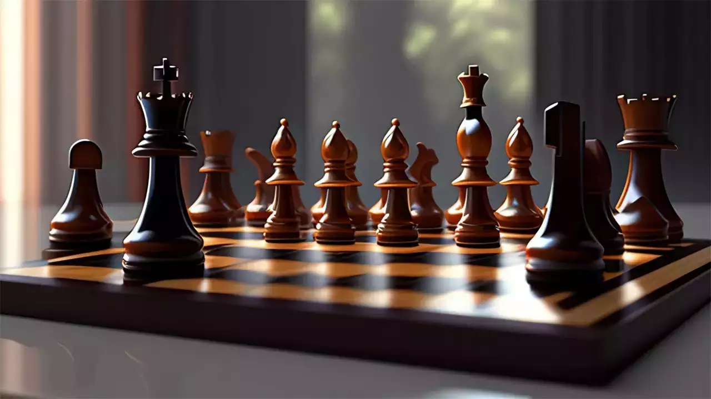
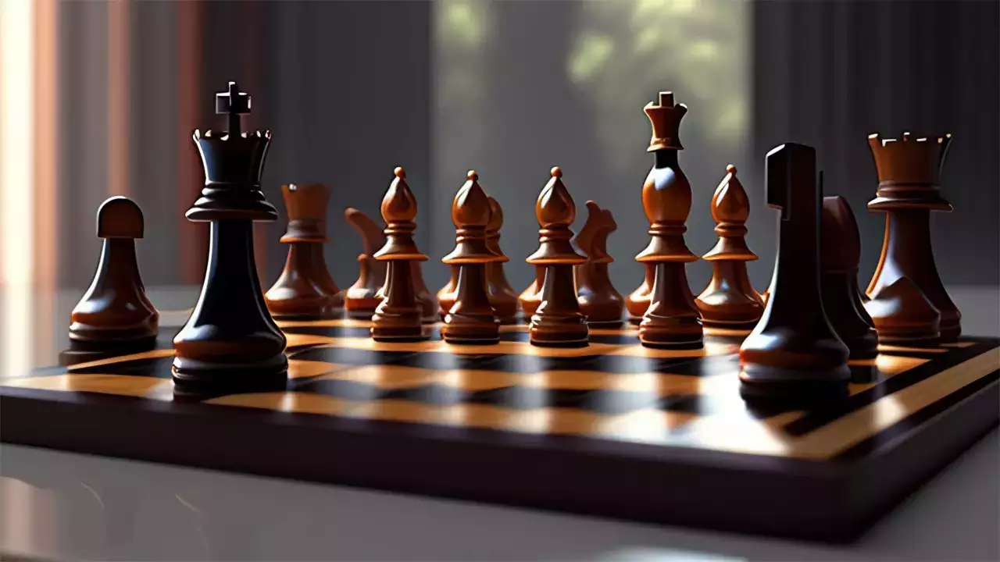
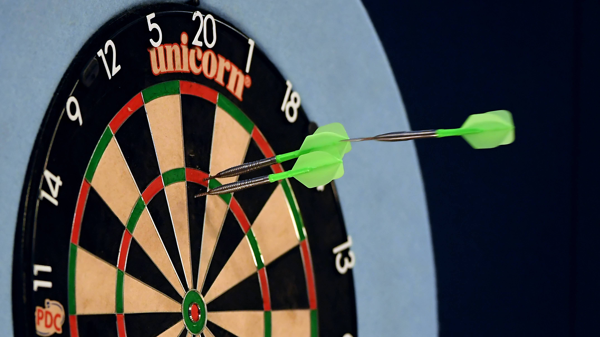
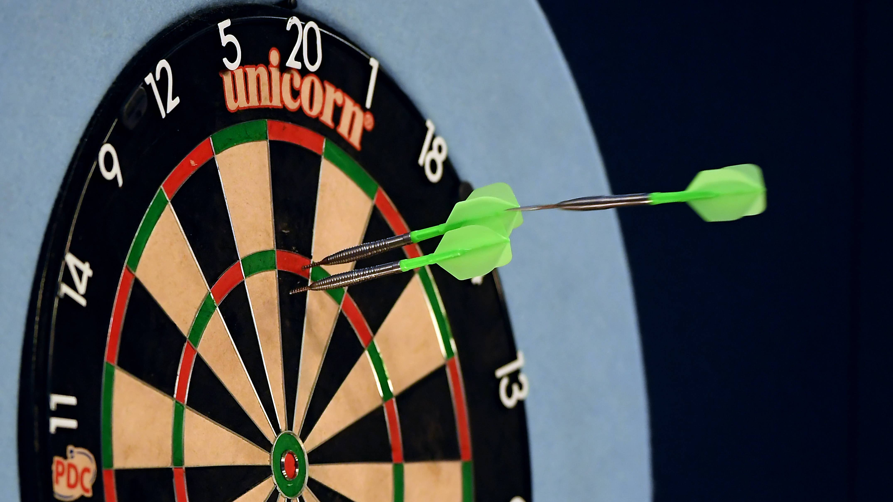

HOBBIES
My passion for basketball ignites with every dribble and dunk, fueling my drive for teamwork and athleticism.
In badminton, the swift exchanges and strategic placements sharpen my focus, while in chess, the mental battles
teach me foresight and patience, forming a tapestry of diverse challenges and exhilarating victories.
Playing online games like Mobile legends and call of duty provides a virtual realm of adventure and strategy, where I
can challenge friends worldwide and immerse myself in captivating narratives, enhancing problem-solving skills.
Music transcends boundaries, speaking to emotions and memories, offering solace and inspiration. Netflix indulges my
imagination, offering diverse stories and characters, weaving tales that captivate and entertain endlessly.

 
